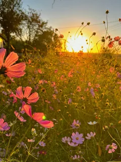

Умирает весна, умирает, Водворяется жаркое лето. Сердит муха, комар сноровляет Укусить, — всё роскошно одето!
Осязательно зреющий колос Возвышается вровень с кустами. По росе долетающий голос Из лесов словно пахнет грибами…
стих